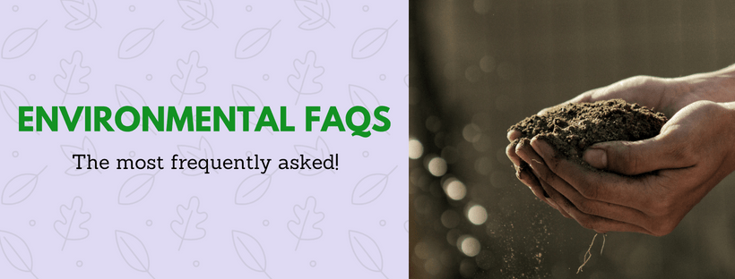

When it comes to Environmental Science or simply the Environment, the explanation to almost everything whether big or small is subject to debates. If you are studying about the environment, you will encounter countless questions and doubts regarding various aspects and phenomena of the environment. The interesting part is that every question can be answered in more than one or two ways. Let’s have a quick look at some of the most frequently asked and encountered (FAQs) about the environment.
Carbon dioxide equivalents or simply CO2 equivalents (CO2) are every other has apart from CO2 itself that have individual or combined negative effects equivalent to CO2 like the Greenhouse effect, Global warming, and ozone layer depletion. All greenhouse gases are categorized as CO2 equivalents.
Greenhouse gases or GHGs in technical terms are gases in the atmosphere that absorb and emit radiant energy within the thermal infrared range. These gases like Carbon Dioxide (CO2) and Carbon Dioxide equivalents (CO2e) accumulate in the air and combine to form an invisible gaseous envelope over the Earth’s Stratosphere. This gaseous envelope traps all the radiated Infrared radiations from the Earth’s surface and reflected UV radiations and prevents them from escaping into the atmosphere. This mechanism is similar to what happens in greenhouse plantations and is hence called the Greenhouse effect. As a result of this heat-trapping process, the Earth’s atmosphere begins to unnaturally heat up, causing the phenomenon of Global warming. It is debatable to date as to which gases are categorized as greenhouse gases. Many experts have stated that any gas that has heat-trapping abilities leading to unnatural heating of the earth’s surface is a Greenhouse gas. The Kyoto Protocol in 1992 listed these 6 gases as major Greenhouse gases adding to the effects of Global warming. Carbon Dioxide (CO2) Nitrous Oxide (N2O) Sulphur Dioxide (SO2) Hydrofluorocarbons (HFCs) Perfluorocarbons (PFCs) Sulphur Hexafluoride (SF6)
Greenhouse gases do form in nature and are necessary to an extent to maintain the heat and average temperature of the earth. The primary greenhouse gases in Earth’s atmosphere are water vapor, carbon dioxide, methane, nitrous oxide, and ozone. Without greenhouse gases, the average temperature of Earth’s surface would be about −18°C (0°F), rather than the present average of 15°C (59°F). But like everyone says, too much of something can be harmful, an excess amount of these greenhouse gases has degraded the atmosphere over the past few decades. Since the beginning of the Industrial Revolution around 1750, human activities have produced a 40% increase in the atmospheric concentration of carbon dioxide (CO2). This increase has occurred despite the uptake of more than half of the emissions by various natural “sinks” involved in the carbon cycle. It has been estimated that the Earth’s surface temperature could exceed historical values as early as 2047 if greenhouse gas emissions continue at their present rate. This can have potentially harmful effects on ecosystems, biodiversity and the livelihoods of people worldwide.
The term “Global warming project” can be called by many names. Global warming protocol Global warming treaty Global warming framework Global warming agreement AND SO ON! Now the primary and basic objective of any such global warming project is to deduce measures, precautions and models to reduce, prevent or possibly eliminate the harmful effects of global warming on the Earth’s environment, including flora and fauna. Global warming is the unnatural heating of the Earth’s surface and it’s atmosphere due to the excess emission of CO2 and other Greenhouse gases also known as CO2 equivalents (CO2e), that trap the planet’s heat and prevents it from escaping into the atmosphere. Most of the successful global warming protocols till now have dealt with Greenhouse gases (GHG), it’s causes, consequences, mitigation, adaptation and its role in increasing Global warming. POPULAR GLOBAL WARMING PROTOCOLS Kyoto Protocol (1992) The Kyoto Protocol (1992) was an international treaty signed by 192 countries that came forward to discuss the concerns regarding Global warming and deduce measures to prevent it. The two main agendas of the conference were Global warming is increasing. CO2 emissions primarily from human activities are causing this. The Kyoto Protocol listed these 6 gases as major Greenhouse gases adding to the effects of Global warming. Carbon Dioxide (CO2) Nitrous Oxide (N2O) Sulphur Dioxide (SO2) Hydrofluorocarbons (HFCs) Perfluorocarbons (PFCs) Sulphur Hexafluoride (SF6)
The Paris Agreement is an agreement within the United Nations Framework Convention on Climate Change (UNFCCC) dealing with greenhouse gas emissions mitigation, adaptation, and finance starting in the year 2020. 195 countries across the world have signed this agreement. According to the UNFCCC, the Paris Agreement aims at these following agendas. Holding the increase in the global average temperature to well below 2 °C above pre-industrial levels and to pursue efforts to limit the temperature increase to 1.5 °C above pre-industrial levels, recognizing that this would significantly reduce the risks and impacts of climate change; Increasing the ability to adapt to the adverse impacts of climate change and foster climate resilience and low greenhouse gas emissions development, in a manner that does not threaten food production; Making finance flows consistent with a pathway towards low greenhouse gas emissions and climate-resilient development.
Environmental ethics is a branch of philosophy that involves the study of good and bad, of right and wrong or simply a set of moral principles and values held by a person or a society to relationships between the environment, the people and the non-human entities. These values or ethics are considered instrumental for the pragmatic benefits it brings us and to the environment if we put it to use. Environment ethics has been produced around environmental philosophy and is not asserted on the people by any law or policy. It is rather a personal responsibility that should be developed to establish a stable balance between society, economy and the environment.
I have pursued both my Bachelor and Master of Science degrees in Environmental Science and from the knowledge, exposure and experience I have gained so far, I strongly believe that Environmental Science and related fields of the subject have huge scope in the future, especially by the next 7–10 years. The knowledge of a common man when asked about the Earth, Nature, Environment, and its degradation was only limited to terms like Carbon Dioxide, the Ozone layer, Air pollution, Water pollution, etc. which is just not enough. We as students can and will play a major and crucial role in spreading Environmental awareness primarily because students in this field possess more knowledge and sense about the environment than the common public. Environment Science is a combination of everything we’ve studied since our childhood including Physics, Chemistry, Biology, Biotechnology, and other subjects, so we need to brush the basics and have awareness of more than just CO2 in the air or global warming.
Global warming is not just real, but dynamic as well. Which means that it is changing (Or rather increasing) with every passing moment, which is a major international concern. Global warming is the unnatural heating of the Earth’s surface and it’s atmosphere due to the excess emission of CO2 and other Greenhouse gases also known as CO2 equivalents (CO2e), that trap the planet’s heat and prevents it from escaping into the atmosphere. Numerous human activities like the burning of fossil fuels for power generation, Carbonaceous emissions from various modes of transports, domestic and agricultural activities release Carbon Dioxide (CO2) and Carbon Dioxide equivalents (CO2e) into the atmosphere. Thus causing unnatural heating of the atmosphere. INTERNATIONAL CONCERNS Various reports by UNFCCC, IPCC, NASA, and NCAR reveal that over the past 20 years, the Earth’s average temperature has risen by around 3°F and if the current trends of CO2 and other Greenhouse gases continue, then the figure would increase to 7°F in the next 50 years.
Heavy metal contamination is increasingly being recognized as dramatic in large parts of the developing world, particularly in India and China. Heavy metals like Mercury, Lead, Zinc, Arsenic, and Cadmium when once entering the body can escape control mechanisms such as homeostasis, transport, compartmentalization, and binding to specified cell constituents, thus they can have toxic and even lethal effects. Heavy metals can cause malfunctioning of the cellular processes via displacement of essential metals from their respective sites. They have been noted to cause oxidative deterioration of biological macromolecules primarily because they bind to DNA and nuclear proteins. Heavy metals possess an enormous potential to undergo bio-magnification and its accumulation in fishes renders communities highly vulnerable to its toxicity. Symptoms that arise as a result of metal poisoning include intellectual disability in children, dementia in adults, central nervous system disorders, kidney diseases, liver diseases, insomnia, emotional instability, depression and vision disturbances. Refer to the following link to know more about metal toxicity and some infamous metal toxicity outbreaks in the past.